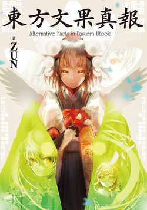

- Welcome to Touhou Wiki!
- Please register to edit. For assistance, check in with our Discord server or IRC channel.
Alternative Facts in Eastern Utopia
Alternative Facts in Eastern Utopia | |
|---|---|
|
 | |
| Developer | |
| Publisher | |
| Released |
2017-03-30 |
| Genre |
Official Book |
| Writers | |
| Illustrators |
Aoi Aioi |
| ISBN | |
Touhou
Contents
Press[edit]
Details regarding the book, including its release date, were announced in the 3rd volume of Strange Creators of Outer World. Preorders opened shortly after.
Read online (complete)[edit]
MangaDex: Touhou Bunka Shinpou ~ Alternative Facts in Eastern Utopia.
Released by Reality Dreamers.
Direct Download[edit]
AFiEU complete book
Contents[edit]
Bunbunharu Weekly[edit]
- pg. 5: Cover
- pg. 7-9: Article: Sumireko Usami (with Kasen Ibaraki) — A female student who can cross over the barrier!
- pg. 10-11: Article: Prismriver Sisters 1 — The Prismriver Ensemble's break-up!
- pg. 12-13: Article: Clownpiece and Hecatia Lapislazuli — A shocking photo of the invaders' secret talk!
- pg. 14-15: Article: Hatate Himekaidou 1 (about Sumireko Usami) — More fake news from Kakashi Spirit News!
- pg. 16: Article: Shinmyoumaru Sukuna 1 — A Small Challenger to White-Water Rafting!
- pg. 17: Index
- pg. 18-21: Article: Yukari Yakumo — Gensokyo's crisis was calculated!?
- pg. 22-25: Article: Reimu Hakurei — The Hakurei Shrine: Ally to the Outside World[3]
- pg. 26-27: Article: Rinnosuke Morichika — Kourindou's Junk Restocked
- pg. 28-29: Article: Tsukumo Sisters — The Birth of Future Stars! The healing "Two Girls Band"
- pg. 30-31: Dangerous Things — DANGEROUS Things Keep Eating Away at Gensokyo!
- pg. 32-33: Article: Eirin Yagokoro — The inconvenient “true effects” of overly effective medicine
- pg. 34-35: Article: Nitori Kawashiro — "Kappa-Approved Hydrogenous Spring Water” and the Maximum Danger that Lurks Within!
- pg. 36-37: Article: Sekibanki — Stange "Smartphone Neck" Disease in Gensokyo!
- Exclusive Bamboo Forest Scoops
- pg. 38-39: Article: Reisen Udongein Inaba 1 — The dangerous "addictiveness" of the moon's dango and their terrifying "side effects"!"[4]
- pg. 40-41: Article: Reisen Udongein Inaba 2 (with Tewi Inaba) — Drug seller turns out to be an immigrant!
- pg. 42-43: Article: Aya Shameimaru — “Bunbunmaru News” is HOT!
- pg. 44-45: Article: Toyosatomimi no Miko 1 (with Yoshika Miyako, Soga no Tojiko, and Mononobe no Futo) — Is she President of the Human Village!?
- pg. 46-47: Article: Toyosatomimi no Miko 2 (with Byakuren Hijiri, Seiga Kaku, and Hata no Kokoro) — "MAKE HUMANS GREAT AGAIN!"
- pg. 48-49: Article: Various Youkai — A serious food supply issue is inevitable
- pg. 50-51: Article: Prismriver Sisters 2 (featuring Raiko Horikawa) — From break-up to reformation in just three days
- pg. 52: Interview: Raiko Horikawa — Becoming the Horismriver Ensemble while as a group of four
- pg. 54-55: Article: Hatate Himekaidou 2 (about Seija Kijin) — The impossible "Discovery of the Real Miracle Mallet"
- pg. 56-57: Tengu Quarrel - Toshihira Arata
- pg. 58-63: Novel: Hieda no Akyuu — "M Dies of M" by Agatha Chris Q
- pg. 65-72: Double Page: "When the Tengu Rest Their Wings"
- pg. 66-69: Illustration by nyanya
- pg. 70-71: Meeting: Three Tengu — Urgent Meeting! Anonymous Tengu hold a Symposium
- pg. 73-80: Newbie Tengu Shinmyoumaru - Haniwa
- pg. 82-83: Article: Doremy Sweet — The Ominous “Rumors” Surrounding a Popular Pillow
- pg. 84-85: Article: Sagume Kishin 1 (Single) — SUSPICIOUS SHADY CHARACTER is frequenting pharmaceutical facility
- pg. 86-87: Article: Sagume Kishin 2 (with Tewi Inaba, Reisen Udongein Inaba, and Eirin Yagokoro) — A Secret Conversation Sending The World Into Panic - Is this the "Yagokoro Incident"!?
- pg. 88-89: Article: Seiran and Ringo — Even the dango business isn't always cushy?
- pg. 90-91: Article: Shinmyoumaru Sukuna 2 (with Wakasagihime) — Shinmyoumaru's Still At It!
- pg. 92-93: Article: Kagerou Imaizumi — A "guess the human" game has started
- pg. 94-95: Article: Hata no Kokoro — "Ningyo-yaki In Love" is published
- pg. 96-97: Article: Momiji Inubashiri — At last: The countdown to the Aerial Ropeway
- pg. 98: Essay: Tenshi Hinanawi — Luxurious Heavenly Cuisine for the Needy - Tenshi Hinanawi
- pg. 99: Essay: Komachi Onozuka — Next Week's Deaths - Komachi Onozuka
- pg. 100-101: Essay: Marisa Kirisame — Marisa's Lucky Danmaku Horoscope - Marisa Kirisame
- pg. 104-105: Article: Kyouko Kasodani — The Reality of the Sweatshop World of Religion
- pg. 106-107: Article: Kogasa Tatara, Yoshika Miyako, and Seiga Kaku — The Dread of the Urban Legend Incident!
- pg. 108-111: Interview: Sumireko Usami — Whose Side Is The Outsider On? - Sumireko Usami
- pg. 112-117: Interview: Hecatia Lapislazuli — World-Crossing Discourse - Hecatia Lapislazuli
- pg. 118: Colophon
- pg. 120-121: Essay: Aya Shameimaru 1 — Top 100 Famous Hot Springs of Gensokyo - Aya Shameimaru
- pg. 122-123: Essay: Yuyuko Saigyouji — Yuyuko's One Dish One Bite - Yuyuko Saigyouji
- pg. 124-125: Essay: Rinnosuke Morichika — Useless Modern Tools - Rinnosuke Morichika
- pg. 126: Essay: Aya Shameimaru 2 — The secret stores that only Tengu know of - Aya Shameimaru
Advertisement[edit]
- pg. 25: Marisa Kirisame 1
- pg. 53: Doremy Sweet
- pg. 64: Marisa Kirisame 2
- pg. 81: Keine Kamishirasawa and Hieda no Akyuu
- pg. 102: Nitori Kawashiro
- pg. 103: Sakuya Izayoi
- pg. 119: Rin Kaenbyou
- pg. 127: Bunbunharu Weekly
- pg. 128: Bunbunmaru Newspaper
Self Reflection[edit]
- pg. 130-131: Fact Check: Clownpiece and Hecatia Lapislazuli — 12-13
- pg. 132-133: Fact Check: Toyosatomimi no Miko 1 (with Yoshika Miyako, Soga no Tojiko, and Mononobe no Futo) — 44-45
- pg. 134-135: Fact Check: Nitori Kawashiro — 34-35
- pg. 136-137: Fact Check: Hatate Himekaidou 1 (about Sumireko Usami) — 14-15
- pg. 138-140: Report that Bunbunharu Weekly Is Released to Be Cancelled —
Afterword by ZUN[edit]
- pg. 142-143: Afterword
Gallery[edit]
Promotional image featured in Strange Creators of Outer World, with Sagume Kishin. Tagline reads: "I wonder what kind of book it is..."
Back cover featuring Hecatia Lapislazuli and Clownpiece
References[edit]
- ↑ Curiosities of Lotus Asia - Chapter 30
- ↑ Forbidden Scrollery - Chapter 49
- ↑ On the book, the number of page is misprinted as it starts from pg. 20.
- ↑ On the book, the number of page is misprinted as it starts from pg. 36.
| ||||||||||||||||||||||||||
| ||||||||||||||||||||||||||||